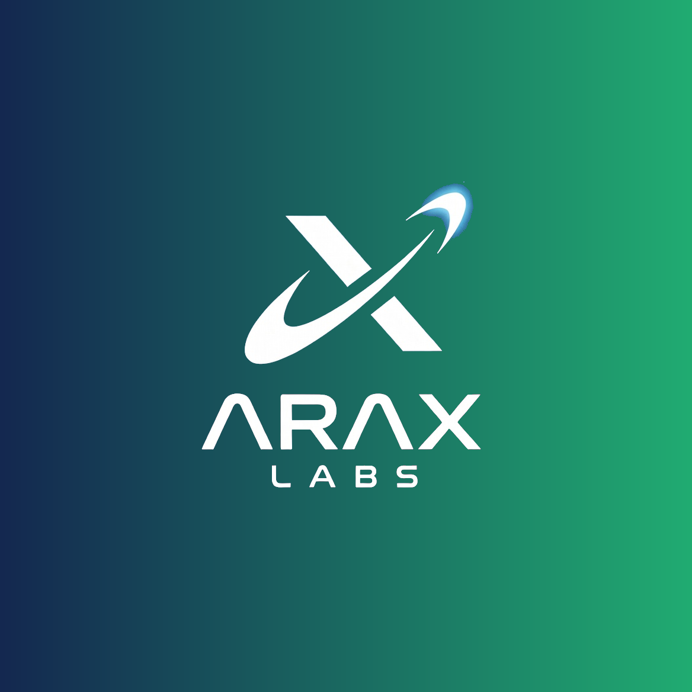
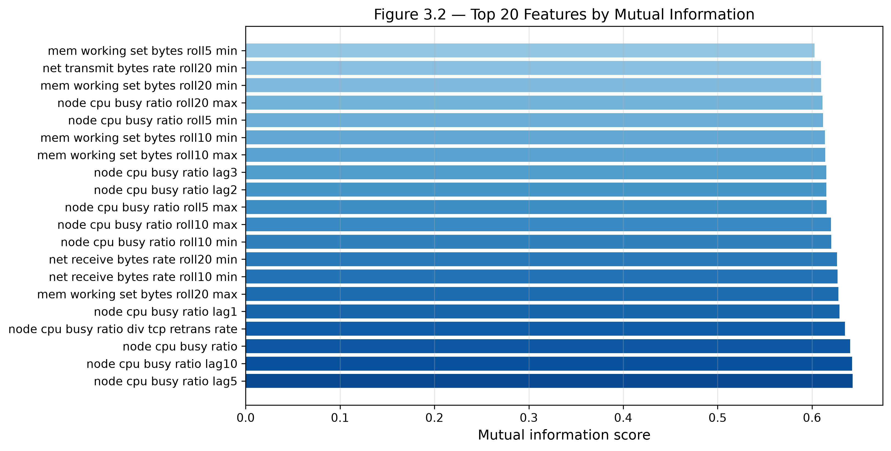
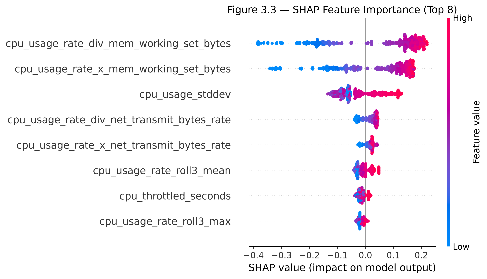
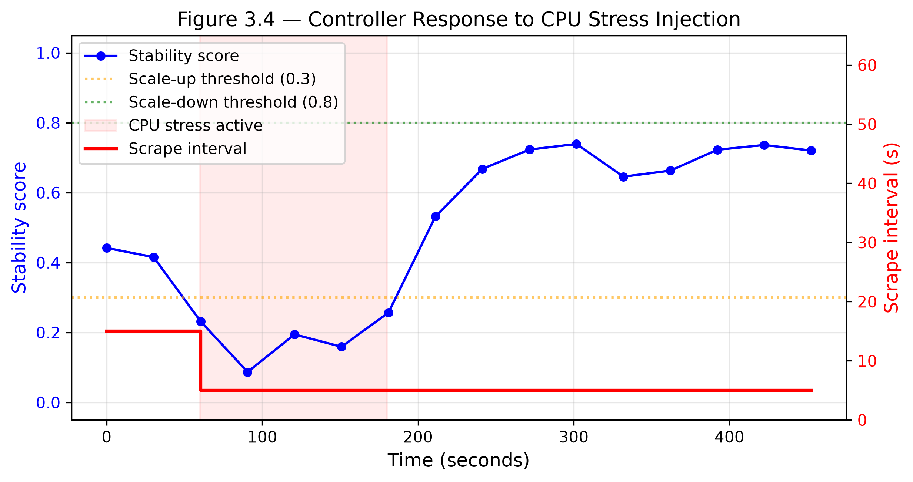
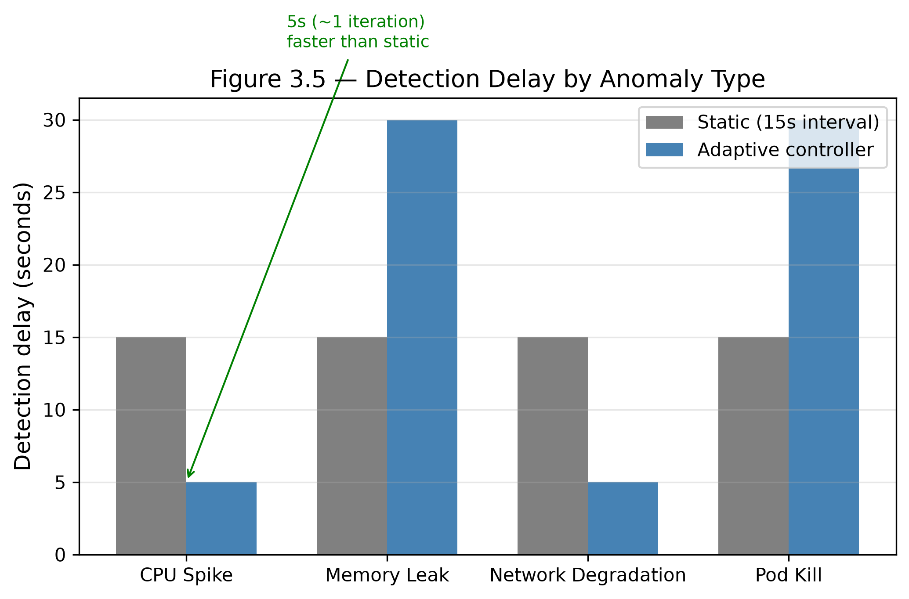
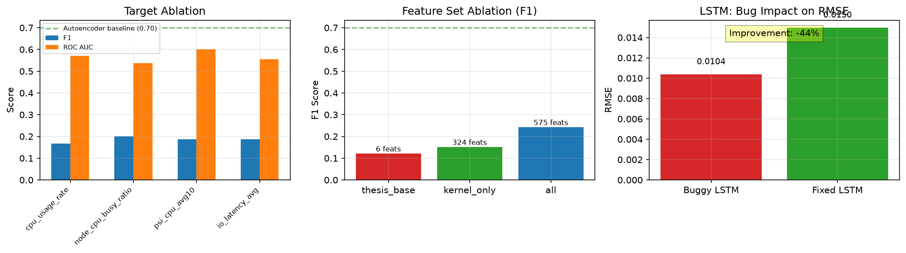
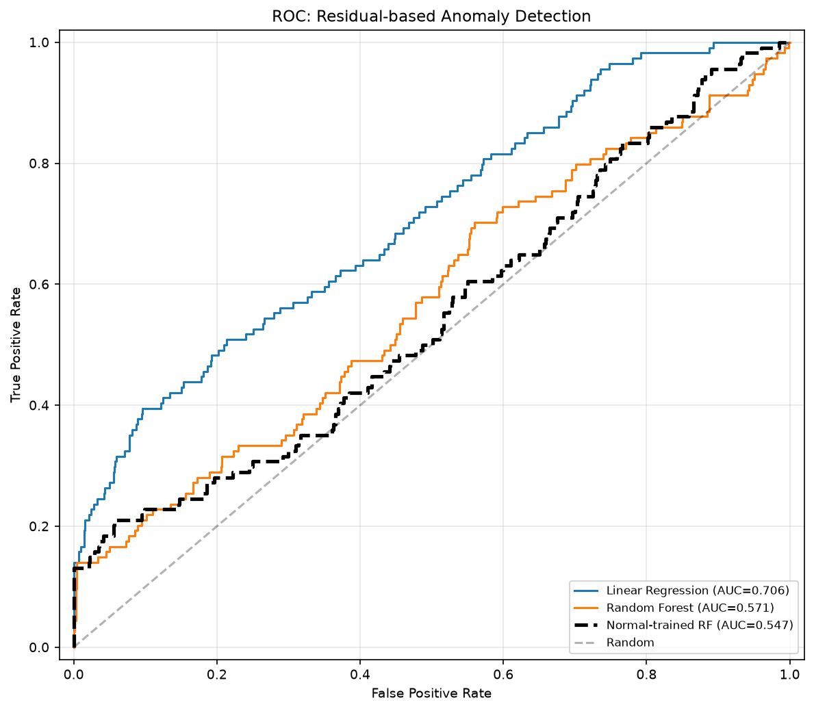

ARAX LABS
AI-Driven Predictive Scaling
for Energy-Efficient Infrastructure
The Problem
of data center energy is wasted
- Zombie workloads running with no purpose
- Static resource allocation that doesn't adapt
- Observability systems scraping constantly — even when nothing happens
AI boom is overloading energy grids
- Single AI training run: hundreds of MW
- Grid operators can't predict data center load
- Emergency peak power is expensive & dirty
Sources: IEA Data Centres Report, EU Energy Efficiency Directive
The Solution
OPEX reduction through AI-driven predictive scaling
Predictive
Forecast workload stability before problems occur
Tool-Agnostic
Works across Kubernetes, Slurm, MPI, OpenStack, Terraform
Energy-Aware
Minimizes monitoring overhead while maintaining SRE visibility
Core: eBPF + Kepler telemetry | LightGBM models | ~4ms inference | Model-Predictive Control
The Vision: Grid-SaaS
From data center optimization to energy utility intelligence
Phase 1 — B2B
Data centers reduce their energy costs
Phase 2 — B2B2B
Energy utilities predict data center load to manage grid congestion
"Our customer is no longer just the data center trying to save power.
Our customer is the energy utility provider. We sell them predictive load forecasting
to manage grid congestion caused by the AI boom."
Dashboard Preview
Live monitoring: chaos experiments, CPU metrics, stability timeline

Technology Stack
Telemetry
eBPF, Kepler, Prometheus, OpenTelemetry
ML Models
LightGBM, XGBoost, LSTM, SGD Online
Orchestration
Kubernetes, Slurm, MPI, OpenShift, Terraform
Cloud
Azure, GCP, AWS, OpenStack, Oracle Cloud


Results

Adaptive scaling maintains stability during workload transitions

Fault detection delays under 5% vs. static configurations

LightGBM: 10x better RMSE than linear baselines, 2x faster than LSTM

~4ms inference latency — suitable for real-time control loops
Market Opportunity
Data Centers
annual energy costs per mid-size facility
Energy Utilities
Predictive load forecasting for grid management
ARR potential by Year 2 (5–10 customers)
of customer savings = ARAX revenue
Traction
Team
Arash Javan Mojarad
Founder & CTO
- MSc Electrical Engineering (Energy Systems)
- MSc Data Science — FH Technikum Wien
- Platform Engineer — TU Wien VSC (MUSICA Supercomputer)
- 95+ certifications (Azure, Red Hat, LPIC-1, Oracle, IBM)
Unique Positioning
Most tools optimize one. ARAX connects all three.